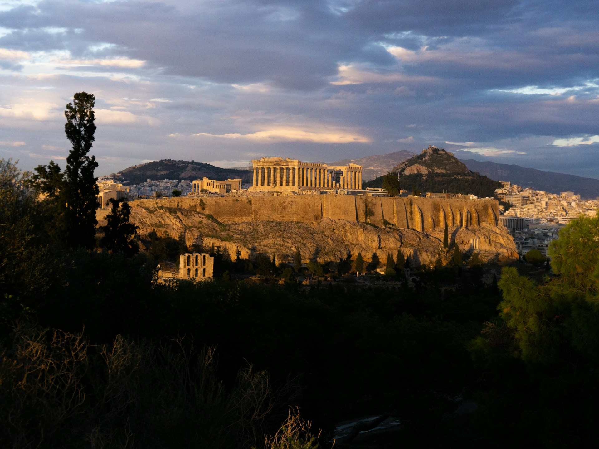
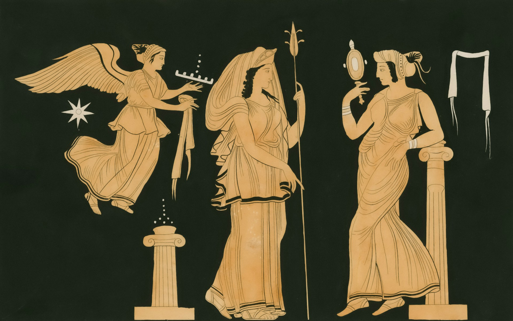

Godly Whispers
The Twelve Olympian Gods: A Pantheon of Power and Myth.
At the heart of Ancient Greek mythology stands the twelve Olympian gods, each embodying a unique facet of power, nature, and human emotion. From the majestic heights of Mount Olympus, Zeus, Hera, Poseidon, Demeter, Athena, Apollo, Artemis, Ares, Aphrodite, Hephaestus, Hermes, and Hestia (or sometimes Dionysus) ruled over the world of gods and mortals alike. Together, they wove a tapestry of stories filled with creation, conflict, and profound connections to the ancient cities that worshiped them.
The origins of the Olympian gods are rooted in the creation myths of Greece, where Chaos birthed the first primordial beings, eventually leading to the rise of the Titans and their dramatic overthrow by Zeus and his siblings. These tales of cosmic struggle set the stage for the gods' rule and their role in shaping human destiny.
The Olympians were far from detached observers; they intervened in mortal affairs with a divine blend of wisdom, whimsy, and wrath. In the Trojan War, for example, gods and goddesses like Athena, Aphrodite, and Apollo took sides, influencing battles and shaping the fates of heroes such as Achilles and Hector. These stories not only reveal their immense power but also their deeply human flaws and rivalries, making them endlessly fascinating.
Beyond warfare and mythic drama, the Olympian gods were also protectors and patrons of ancient cities. Athena’s unwavering guardianship of Athens, symbolized by the Parthenon, and Apollo’s sacred connection to Delphi as the god of prophecy illustrate their enduring influence. Their presence was not confined to myths; it was deeply embedded in the culture, art, and daily life of ancient Greece.
In this blog, we delve into these timeless stories, exploring how the twelve Olympian gods shaped the ancient world and continue to inspire us today.
